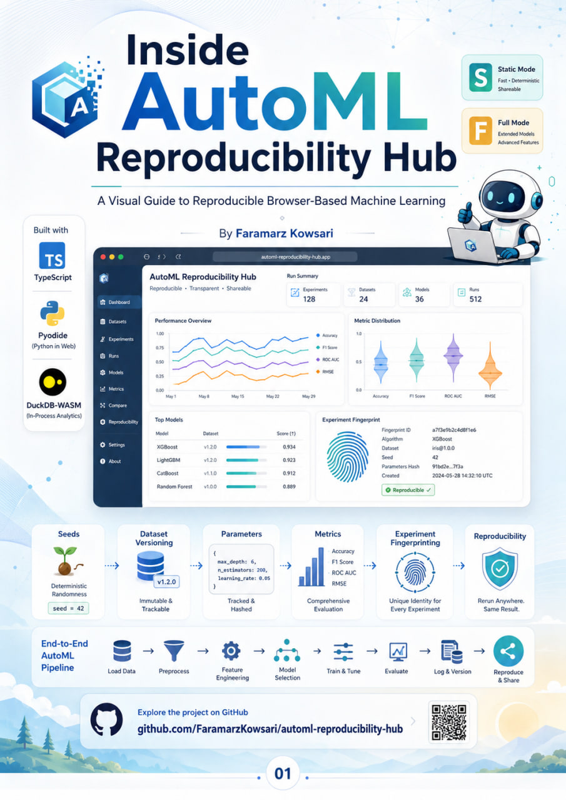

Official 10-page infographic guidebook
Inside AutoML Reproducibility Hub
A visual guide to reproducible browser-based machine learning, from deterministic seeds and versioned datasets to Pyodide execution, DuckDB-WASM analytics, experiment manifests, fingerprints, metrics, and deployment.

10A4 infographic pages
S + FStatic and Full modes
100%Browser-first architecture
3TypeScript, Pyodide, DuckDB-WASM
What the guidebook covers
- 01Project cover and reproducibility vision
- 02Project at a glance and the ML reproducibility problem
- 03Architecture and technology stack
- 04Static Reference Mode (S)
- 05Full Browser Execution Mode (F)
- 06End-to-end experiment lifecycle
- 07Manifests, versions, hashes, and fingerprints
- 08Metrics, model comparison, and exportable outputs
- 09Research value, privacy, deployment, and citation readiness
- 10Guidebook summary, author biography, and official profiles